background-image: url(../img/fp-tower/website-background.svg) class: center, middle, white .title[Variance] --- # Subtyping .eighty-seven-left[ ```scala sealed trait Role case class Reader(accountId: AccountId, premiumUser: Boolean) extends Role case class Editor(accountId: AccountId, favoriteFont: String) extends Role case object Admin extends Role ``` ] .center[ 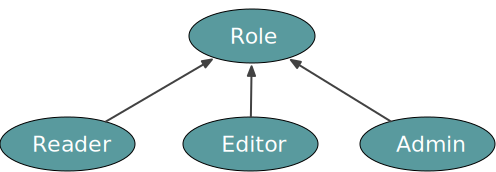 ] --- # Subtyping .eighty-seven-left[ ```scala sealed trait Role case class Reader(accountId: AccountId, premiumUser: Boolean) `extends Role` case class Editor(accountId: AccountId, favoriteFont: String) `extends Role` case object Admin `extends Role` ``` ] .center[ 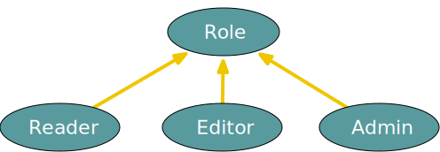 ] --- # Subtyping is a form of polymorphism .eighty-seven-left[ ```scala val bob = Editor(AccountId(123), favoriteFont = "Comic Sans") // bob: `Editor` = Editor(AccountId(123), "Comic Sans") val role: Role = bob // role: Role = Editor(AccountId(123), "Comic Sans") ``` ] .center[ <img src="../img/foundation/role-hierarchy-3.svg" style="width:600px;"/> ] --- # Subtyping is a form of polymorphism .eighty-seven-left[ ```scala val bob = Editor(AccountId(123), favoriteFont = "Comic Sans") // bob: Editor = Editor(AccountId(123), "Comic Sans") val role: `Role = bob` // role: Role = Editor(AccountId(123), "Comic Sans") ``` ] <br> .center[ 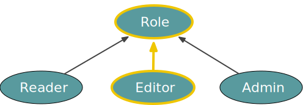 ] --- # Subtyping is a form of polymorphism .eighty-seven-left[ ```scala val bob = Editor(AccountId(123), favoriteFont = "Comic Sans") // bob: Editor = Editor(AccountId(123), "Comic Sans") val role: Role = bob // role: Role = Editor(AccountId(123), "Comic Sans") val reader: `Reader = role` // `type mismatch` // found : Role // required: Reader ``` ] .center[ 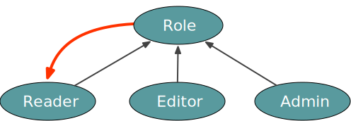 ] --- background-image: url(../img/foundation/role-hierarchy-5.svg) --- background-image: url(../img/foundation/role-hierarchy-6.svg) --- background-image: url(../img/foundation/role-hierarchy-7.svg) --- background-image: url(../img/foundation/role-hierarchy-8.svg) --- background-image: url(../img/foundation/role-hierarchy-9.svg) --- background-image: url(../img/foundation/role-hierarchy-10.svg) --- background-image: url(../img/foundation/role-hierarchy-11.svg) <br><br><br><br><br><br><br><br><br><br><br><br><br> .forty-seven-left[ ```scala val message: String = null ``` ] --- background-image: url(../img/foundation/role-hierarchy-10b.svg) <br><br><br><br><br><br><br><br><br><br><br><br><br> .forty-seven-left[ ```scala val message: String = null ``` ```scala val age: Int = null // error: an expression of type Null // is ineligible for implicit conversion ``` ] --- background-image: url(../img/foundation/role-hierarchy-12.svg) --- # Either is complex <br><br> .forty-seven-left[ ```scala Either[E2, A] <--> Either[E2, B] ``` ] -- <br><br><br><br> ## Option is simpler .forty-seven-left[ ```scala Option[A] <--> Option[B] ``` ] --- # Subtyping relationship with Option? <br><br><br> .center[ <img src="../img/foundation/option-role-editor.svg" style="width:900px;"/> ] --- # Subtyping relationship with Option? <br><br><br> .eighty-seven-left[ ```scala val optEditor: Option[Editor] = Some(Editor(AccountId(123), "Comic Sans")) val optRole : Option[Role] = optEditor ``` ] --- # Subtyping relationship with List? <br><br><br> .center[ 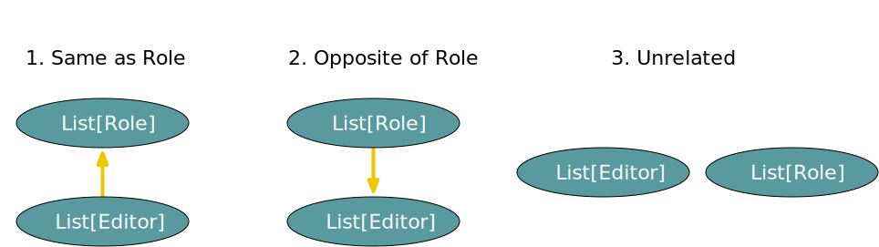 ] --- # Subtyping relationship with List? <br><br><br> .eighty-seven-left[ ```scala val editors: List[Editor] = List( Editor(AccountId(123), "Comic Sans"), Editor(AccountId(444), "Helvetica"), ) val roles: List[Role] = editors ``` ] --- # Counter example: Predicate <br><br> .eighty-seven-left[ ```scala case class Predicate[A](eval: A => Boolean) val hasDefaultFont: Predicate[Editor] = Predicate(_.favoriteFont == "Arial") ``` <br> ```scala hasDefaultFont.eval(Editor(AccountId(111), "Comic Sans")) // res: Boolean = false hasDefaultFont.eval(Editor(AccountId(111), "Arial")) // res: Boolean = true ``` ] --- # Counter example: Predicate <br><br> .eighty-seven-left[ ```scala case class Predicate[A](eval: A => Boolean) val hasDefaultFont: Predicate[Editor] = Predicate(_.favoriteFont == "Arial") ``` ] .seventy-seven-left[ <br> ```scala val rolePredicate: Predicate[Role] = hasDefaultFont ``` ] --- # Counter example: Predicate <br><br> .eighty-seven-left[ ```scala case class Predicate[A](eval: A => Boolean) val hasDefaultFont: Predicate[Editor] = Predicate(_.favoriteFont == "Arial") ``` ] .seventy-seven-left[ <br> ```scala val rolePredicate: Predicate[Role] = hasDefaultFont rolePredicate.eval(Admin) // ??? doesn't make sense rolePredicate.eval(Reader(AccountId(111), premiumUser = true)) // ??? doesn't make sense ``` ] .twenty-two-right[.center[ <img src="../img/foundation/predicate-role-1.svg" style="width:150px;"/> ]] --- # Counter example: Predicate .eighty-seven-left[ ```scala case class Predicate[A](eval: A => Boolean) val isSingleAccount: Predicate[Role] = Predicate { case _: Reader | _: Editor => true case Admin => false } ``` ] .seventy-seven-left[ <br><br> ```scala val editorPredicate: Predicate[Editor] = isSingleAccount editorPredicate.eval(Editor(AccountId(111), "Arial")) // res: Boolean = true ``` ] .twenty-two-right[.center[ 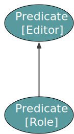 ]] --- # Predicate reverses subtyping relationship <br><br><br><br> 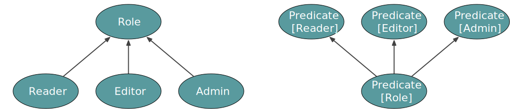 --- # Variance <br><br><br><br> <img src="../img/foundation/option-predicate-role.svg" style="width:1000px;"/> .forty-seven-left[.center[ ## Option is .hl2[covariant] ]] .forty-seven-right[.center[ ## Predicate is .hl2[contravariant] ]] --- # .light-green[.hl2[Invariant]] by default <br><br><br><br> .twenty-seven-left[ ```scala class Foo[A] { ... } ``` ] .center[ <img src="../img/foundation/foo-role.svg" style="width:800;"/> ] --- # Covariant using + <br><br><br><br> .forty-seven-left[ <br> ```scala enum Option[`+`A] { case None case Some(value: A) } ``` ] .center[ 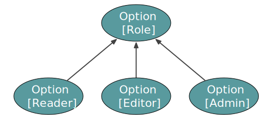 ] --- # Contravariant using - <br><br><br><br> .forty-seven-left[ <br> ```scala case class Predicate[`-`A]( eval: A => Boolean ) ``` ] .center[ <img src="../img/foundation/predicate-role-0.svg" style="width:400;"/> ] --- # Either .eighty-seven-left[ ```scala enum Either[`+`E, `+`A] { case Left(value: E) case Right(value: A) } ``` ] --- # Either .eighty-seven-left[ ```scala sealed trait Either[+E, +A] object Either { case class Left[+E](value: E) extends Either[E, Nothing] case class Right[+A](value: A) extends Either[Nothing, A] } ``` ] --- # Either .eighty-seven-left[ ```scala sealed trait Either[+E, +A] object Either { case class `Left`[+E](value: E) `extends Either`[E, Nothing] case class Right[+A](value: A) extends Either[Nothing, A] } ``` ] --- # Either .eighty-seven-left[ ```scala sealed trait Either[+E, +A] object Either { case class Left[+E](value: E) extends Either[E, `Nothing`] case class Right[+A](value: A) extends Either[Nothing, A] } ``` ] --- # Either .eighty-seven-left[ ```scala sealed trait Either[+E, +A] object Either { case class Left[+E](value: E) extends Either[E, Nothing] case class Right[+A](value: A) extends Either[Nothing, A] } ``` ] .forty-seven-left[ <br><br> ```scala val result1: Either[String, Int] = Left("Something is missing") val result2: Either[String, Int] = Right(5) ``` ] .fifty-two-right[ 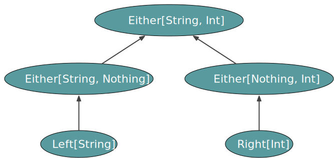 ] --- # Either .eighty-seven-left[ ```scala sealed trait Either[+E, +A] object Either { case class Left[+E](value: E) extends Either[E, Nothing] case class Right[+A](value: A) extends Either[Nothing, A] } ``` ] .forty-seven-left[ <br><br> ```scala val result1: Either[String, Int] = `Left("Something is missing")` val result2: Either[String, Int] = Right(5) ``` ] .fifty-two-right[ <img src="../img/foundation/either-string-int-1.svg" style="width:550px;"/> ] --- # Either .eighty-seven-left[ ```scala sealed trait Either[+E, +A] object Either { case class Left[+E](value: E) extends `Either[E, Nothing]` case class Right[+A](value: A) extends Either[Nothing, A] } ``` ] .forty-seven-left[ <br><br> ```scala val result1: Either[String, Int] = Left("Something is missing") val result2: Either[String, Int] = Right(5) ``` ] .fifty-two-right[ <img src="../img/foundation/either-string-int-2.svg" style="width:550px;"/> ] --- # Either .eighty-seven-left[ ```scala sealed trait Either[+E, `+`A] object Either { case class Left[+E](value: E) extends Either[E, `Nothing`] case class Right[+A](value: A) extends Either[Nothing, A] } ``` ] .forty-seven-left[ <br><br> ```scala val result1: Either[String, Int] = Left("Something is missing") val result2: Either[String, Int] = Right(5) ``` ] .fifty-two-right[ 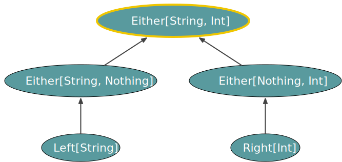 ] --- # Either .eighty-seven-left[ ```scala sealed trait Either[+E, +A] object Either { case class Left[+E](value: E) extends Either[E, Nothing] case class Right[+A](value: A) extends Either[`Nothing`, A] } ``` ] .forty-seven-left[ <br><br> ```scala val result1: Either[String, Int] = Left("Something is missing") val result2: Either[String, Int] = Right(5) ``` ] .fifty-two-right[ ] --- # For comprehension .seventy-two-left[ ```scala for { _ <- Left("Something is missing") _ <- Left("Oops") } yield true ``` ] --- # For comprehension .seventy-two-left[ ```scala for { _ <- Left("Something is missing") _ <- Left("Oops") } yield true // res: Either[String, Boolean] = Left("Something is missing") ``` ] --- # For comprehension .seventy-two-left[ ```scala for { _ <- Left(`"Something is missing"`) _ <- Left(`"Oops"`) } yield true // res: Either[`String`, Boolean] = Left("Something is missing") ``` ] --- # For comprehension .seventy-two-left[ ```scala for { _ <- Left("Something is missing") _ <- Left("Oops") } yield `true` // res: Either[String, `Boolean`] = Left("Something is missing") ``` ] --- # For comprehension .seventy-two-left[ ```scala for { _ <- Left("Something is missing") _ <- Left("Oops") } yield true // res: Either[String, Boolean] = Left("Something is missing") ``` ] .fifty-two-left[ ```scala for { _ <- Left(TooSmall(2)) _ <- Left(InvalidCharacters(List('!', '~'))) } yield true ``` ] .forty-seven-right[.center[ 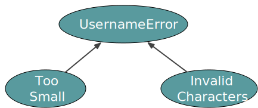 ]] --- # For comprehension .seventy-two-left[ ```scala for { _ <- Left("Something is missing") _ <- Left("Oops") } yield true // res: Either[String, Boolean] = Left("Something is missing") ``` ] .fifty-two-left[ ```scala for { _ <- Left(TooSmall(2)) _ <- Left(InvalidCharacters(List('!', '~'))) } yield true // res: Either[`UsernameError`, Boolean] = // Left(TooSmall(2)) ``` ] .forty-seven-right[.center[ ]] --- # Least Upper Bound (LUB) .seventy-seven-left[.center[ 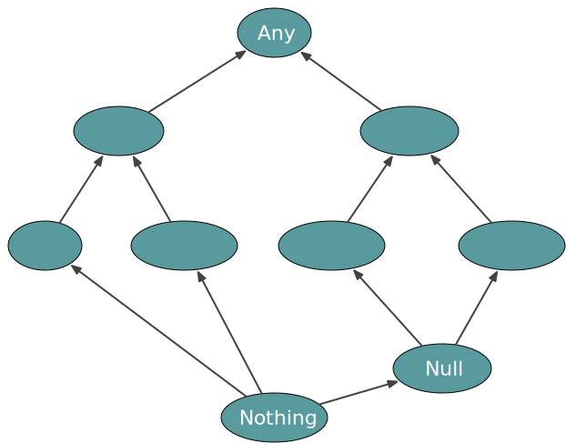 ]] --- # Least Upper Bound (LUB) .seventy-seven-left[.center[ <img src="../img/foundation/flatmap-either-2.svg" style="width:600px;"/> ]] --- # Least Upper Bound (LUB) .seventy-seven-left[.center[ 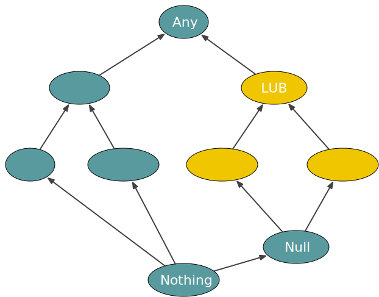 ]] --- # Least Upper Bound (LUB) .seventy-seven-left[.center[ 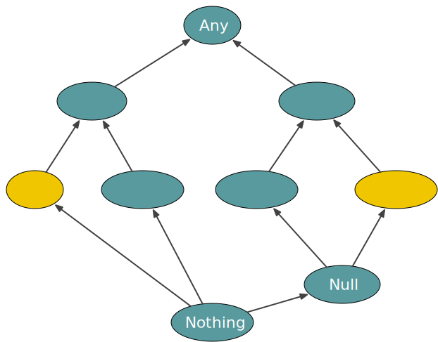 ]] --- # Least Upper Bound (LUB) .seventy-seven-left[.center[ 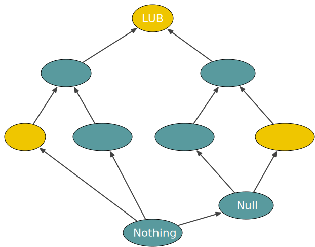 ]] --- # Least Upper Bound (LUB) .seventy-seven-left[.center[ ]] --- # Least Upper Bound (LUB) .seventy-seven-left[.center[ 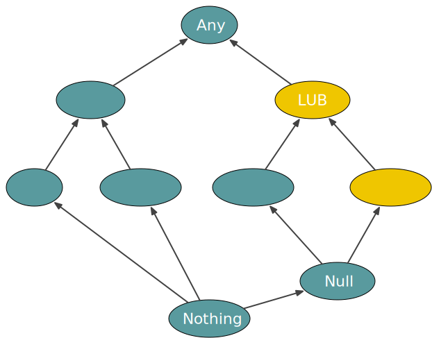 ]] --- # flatMap .seventy-two-left[ ```scala sealed trait Either[+E, +A] { def flatMap[E2, Next](next: A => Either[E2, Next]) = this match { case Left(value) => Left(value) case Right(value) => next(value) } } ``` ] --- # flatMap .seventy-two-left[ ```scala sealed trait Either[+E, +A] { def flatMap[E2, Next](next: A => `Either[E2, Next]`) = this match { case Left(value) => Left(value) case Right(value) => next(value) } } ``` ] --- # flatMap .eighty-two-left[ ```scala sealed trait Either[+E, +A] { def flatMap[E2, Next](next: A => Either[E2, Next]): `Either[???, ???]` = this match { case Left(value) => Left(value) case Right(value) => next(value) } } ``` ] --- # flatMap .eighty-two-left[ ```scala sealed trait Either[+`E`, +A] { def flatMap[E2, Next](next: A => Either[E2, Next]): Either[???, ???] = this match { case Left(value) => Left(`value`) // Either[E, Nothing] case Right(value) => next(value) } } ``` ] --- # flatMap .eighty-two-left[ ```scala sealed trait Either[+E, +A] { def flatMap[E2, Next](next: A => `Either[E2, Next]`): Either[???, ???] = this match { case Left(value) => Left(value) // Either[E , Nothing] case Right(value) => next(value) // `Either[E2, Next]` } } ``` ] --- # flatMap .eighty-seven-left[ ```scala sealed trait Either[+E, `+`A] { def flatMap[E2, Next](next: A => Either[E2, Next]): Either[???, `Next`] = this match { case Left(value) => Left(value) // Either[E , `Nothing`] case Right(value) => next(value) // Either[E2, `Next`] } } ``` ] --- # flatMap .eighty-seven-left[ ```scala sealed trait Either[`+`E, +A] { def flatMap[E2, Next](next: A => Either[E2, Next]): Either[`Any`, Next] = this match { case Left(value) => Left(value) // Either[`E `, Nothing] case Right(value) => next(value) // Either[`E2`, Next] } } ``` ] --- # flatMap .eighty-seven-left[ ```scala sealed trait Either[+E, +A] { def flatMap[`E2 >: E`, Next](next: A => Either[E2, Next]): Either[`E2`, Next] = this match { case Left(value) => Left(value) // Either[E , Nothing] case Right(value) => next(value) // Either[E2, Next] } } ``` ] .center[ 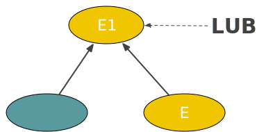 ] --- # flatMap .eighty-seven-left[ ```scala sealed trait Either[+E, +A] { def flatMap[E2 >: E, Next](next: A => Either[E2, Next]): Either[E2, Next] = this match { case Left(value) => Left(value) // Either[E , Nothing] case Right(value) => next(value) // Either[E2, Next] } } ``` <br> ```scala Left(TooSmall(2)).flatMap(_ => Left(InvalidCharacters(List('!', '~'))) ) ``` ] --- # flatMap .eighty-seven-left[ ```scala sealed trait Either[+E, +A] { def flatMap[`E2 >: E`, Next](next: A => Either[E2, Next]): Either[E2, Next] = this match { case Left(value) => Left(value) // Either[E , Nothing] case Right(value) => next(value) // Either[E2, Next] } } ``` <br> ```scala (Left(TooSmall(2)): Either[`TooSmall`, Nothing]).flatMap(_ => (Left(InvalidCharacters(List('!', '~'))): Either[`InvalidCharacters`, Nothing]) ) // res: Either[???, Nothing] ``` ] --- # flatMap .eighty-seven-left[ ```scala sealed trait Either[+E, +A] { def flatMap[E2 >: E, Next](next: A => Either[E2, Next]): Either[E2, Next] = this match { case Left(value) => Left(value) // Either[E , Nothing] case Right(value) => next(value) // Either[E2, Next] } } ``` <br> ```scala (Left(TooSmall(2)): Either[TooSmall, Nothing]).flatMap(_ => (Left(InvalidCharacters(List('!', '~'))): Either[`UsernameError`, Nothing]) ) // res: Either[???, Nothing] ``` ] --- # flatMap .eighty-seven-left[ ```scala sealed trait Either[+E, +A] { def flatMap[E2 >: E, Next](next: A => Either[`E2`, Next]): Either[`E2`, Next] = this match { case Left(value) => Left(value) // Either[E , Nothing] case Right(value) => next(value) // Either[E2, Next] } } ``` <br> ```scala (Left(TooSmall(2)): Either[TooSmall, Nothing]).flatMap(_ => (Left(InvalidCharacters(List('!', '~'))): Either[UsernameError, Nothing]) ) // res: Either[`UsernameError`, Nothing] ``` ] --- # flatMap .eighty-seven-left[ ```scala sealed trait Either[+E, +A] { def flatMap[E2 >: E, Next](next: A => Either[E2, Next]): Either[E2, Next] = this match { case Left(value) => Left(value) // Either[E , Nothing] case Right(value) => next(value) // Either[E2, Next] } } ``` <br> ```scala (Left(1): Either[Int, Nothing]).flatMap(_ => (Left("Oops"): Either[String, Nothing]) ) // res: Either[???, Nothing] ``` ] --- # flatMap .eighty-seven-left[ ```scala sealed trait Either[+E, +A] { def flatMap[`E2 >: E`, Next](next: A => Either[E2, Next]): Either[E2, Next] = this match { case Left(value) => Left(value) // Either[E , Nothing] case Right(value) => next(value) // Either[E2, Next] } } ``` <br> ```scala (Left(1): Either[Int, Nothing]).flatMap(_ => (Left("Oops"): Either[`Any`, Nothing]) ) // res: Either[???, Nothing] ``` ] --- # flatMap .eighty-seven-left[ ```scala sealed trait Either[+E, +A] { def flatMap[E2 >: E, Next](next: A => Either[E2, Next]): Either[E2, Next] = this match { case Left(value) => Left(value) // Either[E , Nothing] case Right(value) => next(value) // Either[E2, Next] } } ``` <br> ```scala (Left(1): Either[Int, Nothing]).flatMap(_ => (Left("Oops"): Either[`Any`, Nothing]) ) // res: Either[`Any`, Nothing] ``` ] --- background-image: url(../img/fp-tower/website-background.svg) <br><br><br> ## .white[Type constructors are either] ## .white[Covariant (+)] ## .white[Contravariant (-)] ## .white[Invariant (by default, no annotation)] --- # Variance cheat sheet <br><br> .forty-seven-left[ ```scala trait JsonDecoder[+A] { def decode(json: Json): Option[A] } trait JsonEncoder[-A] { def encode(value: A): Json } trait JsonCodec[A] { def decode(json: Json): Option[A] def encode(value: A): Json } ``` ] --- # Variance cheat sheet <br><br> .forty-seven-left[ ```scala trait JsonDecoder[`+`A] { def decode(json: Json): Option[`A`] } trait JsonEncoder[-A] { def encode(value: A): Json } trait JsonCodec[A] { def decode(json: Json): Option[A] def encode(value: A): Json } ``` ] --- # Variance cheat sheet <br><br> .forty-seven-left[ ```scala trait JsonDecoder[+A] { def decode(json: Json): Option[A] } trait JsonEncoder[`-`A] { def encode(value: `A`): Json } trait JsonCodec[A] { def decode(json: Json): Option[A] def encode(value: A): Json } ``` ] --- # Variance cheat sheet <br><br> .forty-seven-left[ ```scala trait JsonDecoder[+A] { def decode(json: Json): Option[A] } trait JsonEncoder[-A] { def encode(value: A): Json } trait JsonCodec[`A`] { def decode(json: Json): Option[`A`] def encode(value: `A`): Json } ``` ] --- background-image: url(../img/fp-tower/website-background.svg) <br><br><br> # .white[Summary] <br> ## .white[Either is covariant in both type parameters] ## .white[Variance + type bound => infer LUB]